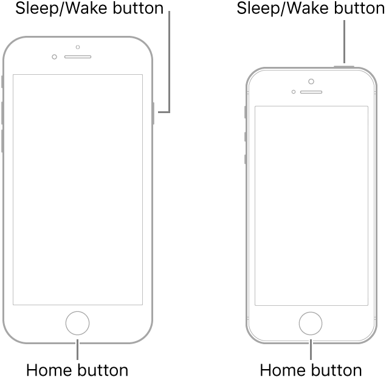

Force Restart Your iPhone
When something goes wrong with technology, the first step of troubleshooting is to restart or force restart a device. In this article, we will go over how to force restart your iPhone.
The steps to force restart an iPhone varies depending on the model you have.
Force Restart iPhone - Face ID
Press and quickly release the volume up button followed by the volume down button, then press and hold the side button until the Apple logo appears.

Force Restart iPhone - Haptic Home Button (8, SE 2 & 3)
Press and quickly release the volume up button followed by the volume down button, then press and hold the side button until the Apple logo appears.

Force Restart iPhone 7
Press and hold the Sleep/Wake button and the volume down button at the same time until the Apple logo appears

Force Restart iPhone - Physical Home Button (SE 1 & 2G - 6s Plus)
Press and hold both the Sleep/Wake button and the Home button at the same time until the Apple logo appears.
Force restarting an iPhone is unnecessary most of the time. If you just need to power off and reboot your iPhone, see the following article:
Last updated: October 12, 2024
All Apple ID's have been updated to Apple Accounts. Your data is still safe and secure and your login info is still the same.
An Apple Account can be created on an iOS device with iOS 9 or later.
Reference the original support article by Apple here: Force Restart Your iPhone - Apple Support
All images used in this article are Apple's found on their offical articles and belong to them.
All references to Apple Inc. and their products and services are trade-marked and are used in these articles for educational purposes.